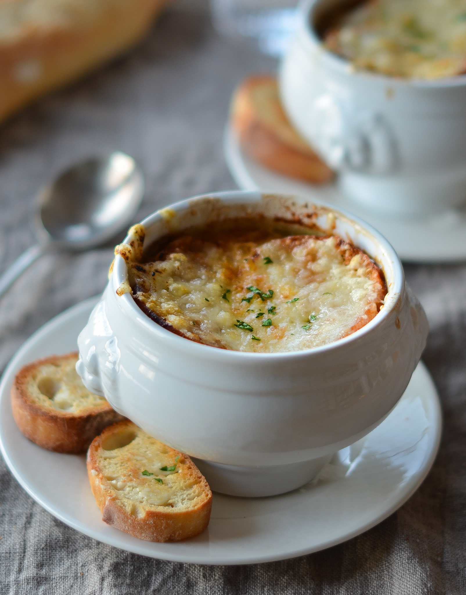

French Onion Soup

Description
Warm, cozy, and flavourful, this French onion soup is prepared with
beef stock and caramelized onions. Top with croutons covered in melty
Gruyere and Parmesan cheese.
Ingredients
- 6 large red or yellow onions
- 4 tbsp extra virgin olive oil
- 2 tbsp butter
- 1 tsp sugar
- Kosher salt
- 2 cloves garlic (minced)
- 8 cups beef stock or chicken stock
- 1/2 cup dry vermouth or white wine
- 2 bay leaves
- 1 tbsp fresh thyme leaves
- 1/2 teaspoon freshly ground black pepper
- 8 slices French bread
- 1 1/2 cups grated Gruyere cheese
Steps
- Peel and thinly slice the onions
- Caramelize the onions with olive oil and butter for 15 to
20 minutes until onions start to brown
- Sprinkle with sugar, add garlic, and stire until onions brow
n
- Deglaze the pot with wine or vermouth
- Add the stock, bay leaves, and thyme
- Season and add the brandy
- Toast the French bread slices
- Serve and enjoy!